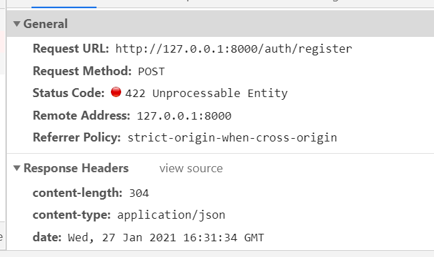
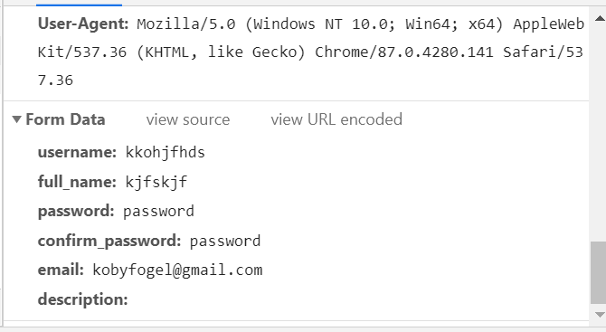
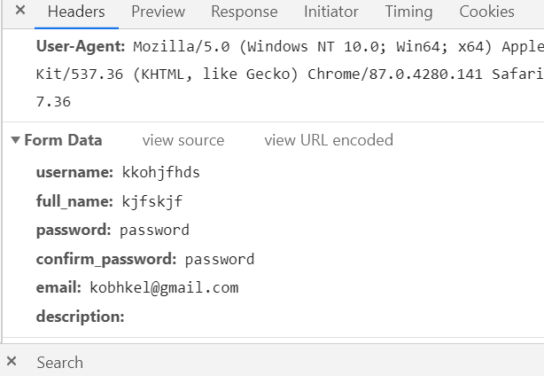

יש לי ראוט שמרנדר טופס עבור הלקוח. אני לוקח ומעבד את הנתונים מהטופס.בסוף הפעולה, אני צריך לשלוח את הנתונים הללו לראוט אחר, שאמור לקבל אותם כמילון, בבקשת פוסט.
אני לא מצליח לבצע את הפעולה הזאת בשום דרך עם return.redirect. האם מישהו יודע איך ניתן לבצע את זה?
האם אתה לא יכול לקרוא ישירות לפונקציה שמעליה יש את ה־decorator של ה־route הרלוונטי?
לא נראה לי שיש אפשרות כזאת. זהוא ראוט שקיבלתי מ fastapi_users. הפונקציה שהוא מפעיל לא נמצאת בקוד שלנו
אפשר לראות קוד? 
נוח לך גיטהאב?..
כל פלטפורמה שבה ניתן לראות קוד
אני מופנה לראוט הרצוי בבקשת פוסט:

אבל אלו הנתונים שעוברים, בכלל לא מה שניסיתי לצרף לרידיירקט:

בסוף מקבל ארור של הפיידנטיק של fast-api users, כי הנתונים זה לא מה שהם מצפים לקבל
אני לא בטוח מה אתה מנסה לעשות.
- לאיזה דף אתה מנסה לשלוח נתונים
- מאיזו פונקציה (אשמח לקבל מספר שורה בקובץ ששלחת)
- מאיפה מגיעים הנתונים האלו (איזה מבנה אתה מנסה לשלוח)
לייק 1
- מנסה לשלוח לראוט “auth/register”. זהוא ראוט שמסופק על ידי fast-api Users. זהוא הראוט שדרכו נרשמים למערכת, כשמשתמשים בסיפרייה הזאת:
- שולח משורה 80 בקובץ ששלחתי.
- הנתונים מתקבלים מטופס html. אני מעביר אותם ביידנטיק שעושים וולידטורס לטופס, ואז מתאים אותם לנתונים שהפיידנטיק של fast-api Users מצפה לקבל. מועברים כמילון, ניסיתי גם כג’ייסון.
אלה הנתונים שאני רוצה שיעברו:
זה מה שהראוט מקבל בפועל:

{kind=link}
{kind=link}
הסיפרייה הזאת עובדת כ- api, מקבלת ומחזירה ג’ייסון. על מנת לקבל את הנתונים מהמשתמש, גם ברג’יסטר וגם בלוגאין, הפתרון שחשבתי עליו הוא הפעלת ראוט נפרד, שירנדר טופס, יאמת אותו. ואז ישלח את הנתונים לראוטים שהם מספקים, בהם לא ניתן לשנות כלום, ואין באמת גישה לפונקציות שהם מפעילים. זאת הדרך היחידה שהצלחתי לחשוב עליה כדי לגרום למערכת הזאת לעבוד עם הפורנט אנד שאנחנו רוצים ליצור
למה לא לגשת לפונקציה שהם מנגישים לרישום, fastapi_users.create_user?
אני לא מאמין שלא ראיתי את זה…
עקבתי אחרי הדוקומנטציה בכל מה שקשור לראוטים, שקראתי מיליון פעם, וזה היה לי מתחת לאף. אנסה.
עדכון: הם לא מספקים פונקציה מקבילה להתחברות. אז אהיה שם בדיוק באותה הבעיה
זאת לא פונקציה שהם מספקים. זה הסבר על הפונקציונליות של הסיפרייה. הגישה לפעולה הזאת היא דרך ראוט auth/jwt שהם מספקים.
דווקא JWTAuthentication היא פוקציה שהם מספקים
כן, היא כבר בקוד. היא שולחת הגדרות בסיס עבור יצירת הטוקן. לא קשור לפעולת הלוגאין.
{kind=link}
כן, זה אכן יוצר את הטוקן. אני מרגיש שאני מפספס משהו. מה חסר?